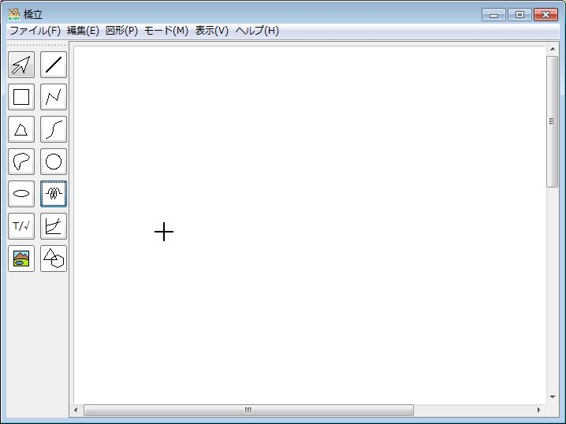
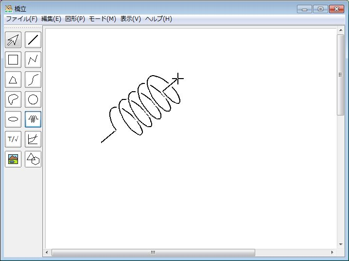
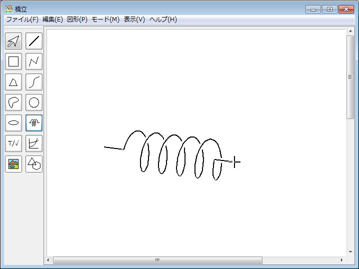
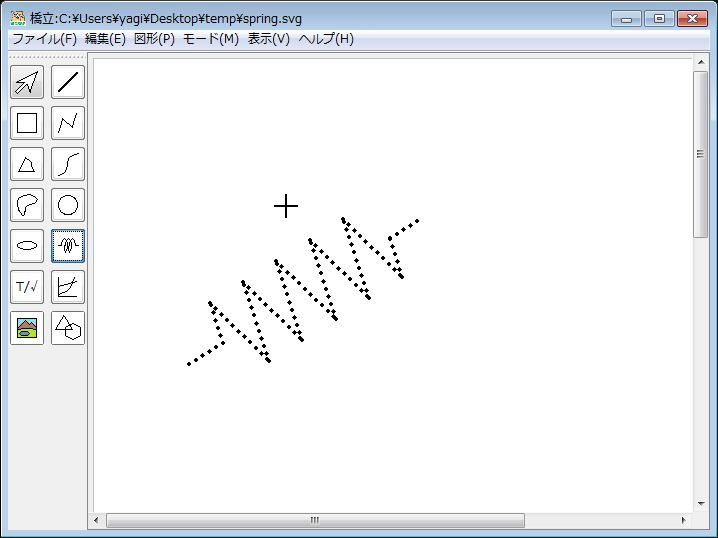

(1) 図形ツールバーのをクリックする、または、
図形
メニューで
バネ
をクリックする → 描画モードになり、描画領域でカーソルが
になる

(2) 描画領域をクリックする → バネの端点が確定する
(3) 移動する → バネが描画される

(4) 描画領域をクリックする → バネが確定する
点図の奥の点を裏点にできる。裏点にする場合は、プロパティで設定し、注意書きをすること。
墨字モード

点字モード
